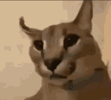

-kiedy powstała
- 1995 roku
-dlaczego jest to język skryptowy
- Ponieważ nie moze zostac skompilowany do kodu maszynowego
-gdzie jest wykonywany JS (kliet lub serwer)
- Klient
-dlaczego jest to bezpieczne narzędzie
Jest bezpieczne, dlatego, ze ma ograniczone uprawnienia dostepu do zasobow komputera
-czy jest to język obiektowy , jeśli tak to dlaczego.
Występujace w jezyku obiekt Image i tablica document.images, swiadcza o tym, ze jest to jezyk obiektowy.
